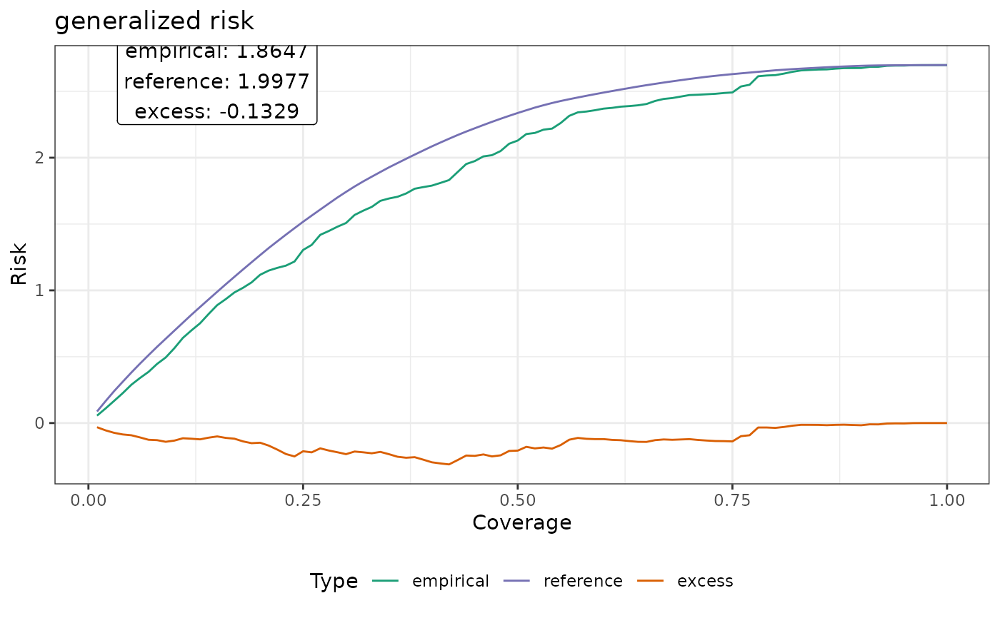

The risk-coverage curve describes the behavior of a model that is combined with a confidence score function used to select samples to exclude from prediction. Compared to traditional reporting of risk at full coverage (1.0), the risk-coverage curve describes the trade-off behavior of a selective prediction model across different levels of coverage and their associated risks.
The Area under the Risk-Coverage Curve (AURC) describes this trade-off as a single scalar value. To make different models more comparable, the excess-AURC (E-AURC) describes the excess area of an empirical risk-coverage curve compared to a reference curve based on an optimal score function. More information are presented in the details section and can be found in the linked reference.
Usage
rc_vec(score, residuals, risk = c("generalized", "selective"), n_bins = 100L)
rc(x, ...)
# S3 method for class 'data.frame'
rc(x, risk = c("generalized", "selective"), loss = NULL, n_bins = 100L, ...)
# S3 method for class 'train'
rc(x, aoa, score, ...)
# S3 method for class 'aoa'
rc(x, model, residuals, ...)Arguments
- score
A numeric vector of confidence scores. Lower values represent higher confidence.
- residuals
A numeric vector of residuals. Lower values represent smaller errors.
- risk
A character indicating the type of risk to calculate. Must be one of
'generalized'or'selective'.- n_bins
An integer indicating the number of coverage bins between
[0,1].- x
A supported object for which an
rcmethod is available. See more information in the details section.- ...
Arguments passed to the data.frame method. There, it is forwarded to the loss-function, if specified. Otherwise ignored.
- loss
By default,
NULL. Can be set to a function. In this case, it is expected that the function receives at least the argumentspredandobsand returns a scalar. Additional arguments are forwarded using....- aoa
An (optional) object of type
aoa. If not specified,scoreis required.- model
An (optional) object of type
train. If not specified,residualsis required.
Value
A data.frame of class rc containing the columns
coverage, empirical, reference, and excess. The
estimates of the respective AUC values can be accessed via attr(rc, "aurc").
Details
Note, that if x is a data.frame, it is required to
contain the columns 'score' and 'residuals'. In case loss
is specified, instead of the 'residuals' column, the expected columns
are 'pred' and 'obs'. These columns are automatically retrieved
in the methods for other classes, or can be supplied manually.
Given a fitted model \(f\) and a selection function \(g\), the combined selective prediction model is defined as:
$$ (f,g)(x) \equiv \begin{cases} \text{$f(x)$, if $g(x) = 1$;}\\ \text{reject, if $g(x) = 0$.} \end{cases} $$
The empirical coverage of such a model over a given data set \(S_m = \{x_i,y_i\}_{i=1}^m\) is defined as
$$ \hat{\phi}(f,g|S_m) = \frac{1}{m} \sum_{i=1}^{m}g(x_i). $$
While we leverage an arbitrary loss function \(\mathcal{L}\) to derive its empirical selective risk
$$ \hat r_s(f|S_m) = \frac{\frac{1}{m} \sum_{i=1}^{m} \mathcal{L}(f(x_i), y_i)g(x_i)}{\hat{\phi}(f,g|S_m)}, $$ which serves as an estimator for the conditional probability \(P(f(x) \ne y|g(x)=1)\), e.g. the risk of an undetected silent failure.
The empirical generalized risk is defined as
$$ \hat r_g(f|S_m) = \frac{1}{m} \sum_{i=1}^{m} \mathcal{L}(f(x_i), y_i)g(x_i), $$ which estimates the joint probability of prediction failure and sample acceptance \(P(f(x) \ne y, g(x)=1)\).
The risk-coverage curve then describes the performance profile of such a selective prediction model, defining risk as a function of coverage. The curve can be derived for any confidence score function \(\kappa\) inducing a selection function \(g\) by applying a threshold \(\lambda\):
$$ g_{\lambda}(x|\kappa,f) = \mathbb{1}[\kappa(x|f)>\lambda]. $$
References
Geifman, Y., Uziel, G., El-Yaniv, R., 2019. Bias-Reduced Uncertainty Estimation for Deep Neural Classifiers. https://doi.org/10.48550/arXiv.1805.08206
Traub, J., Bungert, T.J., Lüth, C.T., Baumgartner, M., Maier-Hein, K.H., Maier-Hein, L., Jaeger, P.F., 2024. Overcoming Common Flaws in the Evaluation of Selective Classification Systems. https://doi.org/10.48550/arXiv.2407.01032
Examples
library(CAST)
set.seed(42)
obs <- runif(100)
pred <- obs + (runif(n = 100, max = 10) * obs)
residuals <- abs(pred - obs) # MAE
score <- runif(n = 100) * residuals # decreasing confidence with residuals
# vectorized version with pre-calculated residuals
rc1 <- rc_vec(score = score, residuals = residuals)
# data.frame with pre-calculated residuals
rc2 <- rc(data.frame(score = score, residuals = residuals))
# data.frame with a specified loss function
rc3 <- rc(data.frame(pred = pred, obs = obs, score = score), loss = caret::MAE)
identical(rc1, rc2) & identical(rc1, rc3)
#> [1] TRUE
print(rc1)
#> generalized risk
#> AUC: 0.833 Ref-AUC: 0.6999 E-AUC: 0.1331
#> coverage threshold risk reference excess
#> 0.01 0.001370642 1.873211e-05 1.873211e-05 0.000000e+00
#> 0.02 0.004161761 1.789909e-04 1.395128e-04 3.947812e-05
#> 0.03 0.004443544 2.997717e-04 2.745906e-04 2.518107e-05
#> ...
#> coverage threshold risk reference excess
#> 0.98 5.070777 2.587670 2.532550 0.05511989
#> 0.99 5.273846 2.642167 2.610806 0.03136069
#> 1.00 5.367198 2.697990 2.697990 0.00000000
attr(rc1, "auc")
#> risk auc_emp auc_ref auc_exs
#> 1 generalized 0.8329797 0.6998885 0.1330912
plot(rc1)
